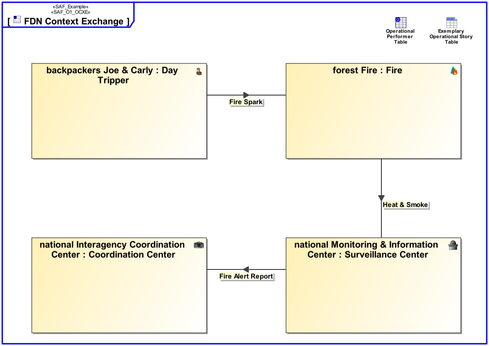
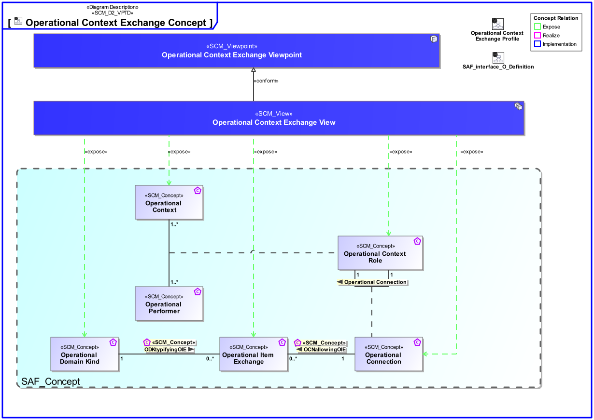
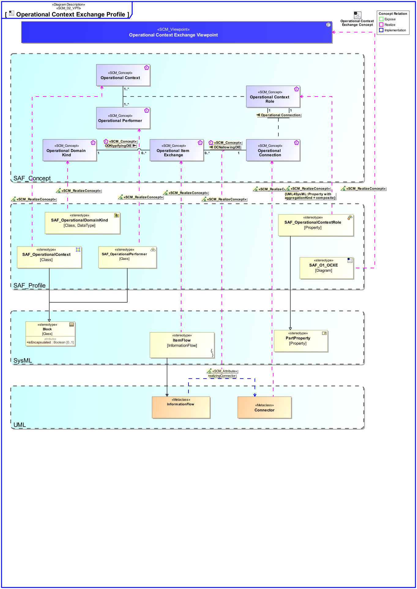

O1_OCXE Operational Context Exchange Viewpoint
| Domain | Aspect | Maturity |
|---|---|---|
| Operational | Context & Exchange |

The Operational Context Exchange Viewpoint provides the operational exchange of systems, personnel, information, material, energy, etc. between operational performers.
The Operational Context Exchange Viewpoint supports the “Business or Mission Analysis Process” activities of the INCOSE SYSTEMS ENGINEERING HANDBOOK 2023 [§2.3.5.1] and contributes to both the problem or opportunity statement, and the Major Stakeholder Identification.
An internal block diagram (IBD) - associated to the operational context - featuring the interconnected operational performers in their respective operational role, and the operational item exchange per operational connection.
A tabular format listing [tbd].
The following Stereotypes / Model Elements are used in the Viewpoint:
The Diagram shows the concepts exposed by the viewpoint, and related concepts if necessary.

| Concept | Documentation |
|---|---|
| Operational Context Role | An Operational Context Role represents a participant in an Operational context. It is interacting with other roles of the given Operational Context. Specific characteristics and features or, in case of persons or organizational units, knowledge and skills are assigned to a role necessary for the execution of the performed Operational Processes. |
| Operational Context | An Operational Context is representing a separate Usage Scenario with a specific configuration of Operational Performers, these are interacting in the Scenario exhibiting a specific identified Operational Capability. One or more Operational Contexts meaningful for the Operational Domain are to be identified. Aliases: UAF::HighLevelOperationalConcept |
| Operational Domain Kind | Specifies the kind of Operational Item Exchange between Operational Context Roles or Operational Processes. |
| Operational Connection | Specifies the connection between Operational Context Roles in an Operational Context allowing Operational Item Exchange. Aliases: UAF::OperationalConnector |
| Operational Item Exchange | Specifies the Operational Item Exchange that is to take place on an Operational Connection. Aliases: UAF::OperationalExchange |
The Diagram shows the implementation of exposed concepts.
